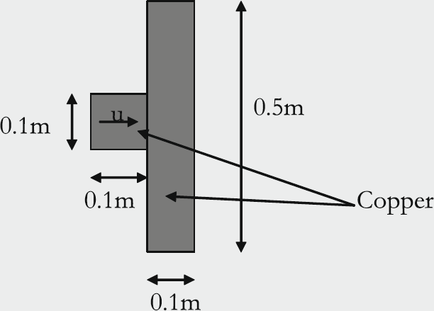

All simulations shown here are using discontinuous finite elements for the approximation in space and continuous finite elements for the mesh velocity space.
Our implementation is built on top of a general discretization library, MFEM, thus separating the pointwise physics from finite element and meshing concerns.
Robust low order simulations
Isentropic Vortex
To access the accuracy of the method when applied to a moving mesh with large vortex-induced deformations, we test it on the isentropic vortex problem.
The exact solution for this problem is given by
\begin{equation}
\rho(\boldsymbol{x},t)=(T_{\infty}+\delta
T)^{1/(\gamma-1)},\qquad \boldsymbol{v}(\boldsymbol{x},t)=\boldsymbol{v}_{\infty}+\delta\boldsymbol{v}, \qquad
p(\boldsymbol{x},t)=\rho^{\gamma},
\end{equation}
with the free-steam
conditions \(\rho_{\infty}=1\), \(p_{\infty}=1\), \(T_{\infty}=1\),
\(\boldsymbol{v}_{\infty}=\boldsymbol{0}\), and the perturbations
\begin{equation}
\delta \boldsymbol{v}(\boldsymbol{x},t)=\frac{\beta}{2\pi} e^{\frac{1-r^2}{2}}(-\overline{x}_2,\overline{x}_1), \qquad
\delta T(\boldsymbol{x},t)=-\frac{(\gamma-1)\beta^2}{8\gamma\pi^2}e^{1-r^2},
\end{equation}
where \(\overline{\boldsymbol{x}} = \boldsymbol{x} - \boldsymbol{x}_0 - \boldsymbol{v}_\infty t\), and
\(r:= \|\overline{\boldsymbol{x}}\|_{\ell^2}\) is the Euclidean distance from the vortex center.
The numerical simulations are done with \(\beta=5\), \(\boldsymbol{x}_0=(0,0)\) and \(\gamma=\frac{7}{5}\).
The computational domain \(D^0=(-5,5)^2\), divided into a mesh composed of \(64\times 64\) squares.
The density, velocity, and total specific energy are maintained at the free-stream values on the boundary of the computational domain at all times.
This specific simulation is run without the addition of viscosity. Note this means that we are not guaranteed invariant-domain properties.
Saltzman Shocktube
The Saltzman problem is a shocktube problem in a two-dimensional rectangular box, \( (0, 1)\times (0, 0.1)\) with \(\gamma = \frac{5}{3}\).
It is a benchmark for evaluating the robustness of Lagrangian schemes against hourglass instabilities.
It consists of simulating only half of a Riemann problem by replacing the contact wave with a wall moving at speed 1.
The wall is initially located at \(x =0\).
The initial data is \(\boldsymbol{u}_0 = (1, \mathbf{0}, 10^{-5})\), and the boundary condition is \(\boldsymbol{v} = \boldsymbol{e}_x\) at the boundary \(x =t\) and \(\boldsymbol{v}\cdot \boldsymbol{n} =0\) otherwise.
High order limited simulations
Stay tuned for our high order simulations and forthcoming publication.
Elastic simulations
The results of this section are preliminary and are not yet published. Stay tuned for the forthcoming publication.
Projectile Plate
We consider here the impact of a solid projectile on a solid plate, a problem initially introduced in favrie, gavrilyuk, saurel (2009).
We model a simplified version of the problem presented therein where we only consider the projectile and the plate, but not the surrounding air.
The projectile has an initial velocity \(v = 800\) m/s while the plate is initially at rest.
The projectile is a square with side length \(0.1\) m and the plate is \(0.5\) m long and \(0.1\) m wide.

To avoid simulation collapse due to mesh distortion and compression, the projectile and plate are in contact at initial time \(t=0\).
The projectile contains \(8\times 8\) cells and the plate contains \(8\times 40\) cells.
The solid regions of the projectile and plate are modeled using the Noble-Abel Stiffened Gas equation of state with parameters
\(\gamma_s = 4.22,\ p_{\infty, s} = 3.42\times 10^{10}\) Pa, and \(\rho_s = 8900\) kg/m\(^3\).
Aortic equation of state with fibers oriented with orientation \(\theta = \frac{\pi}{4}\)
With the fiber orientation not parallel or perpendicular to the motion, we observe anisotropy in the behavior of the elastic response.